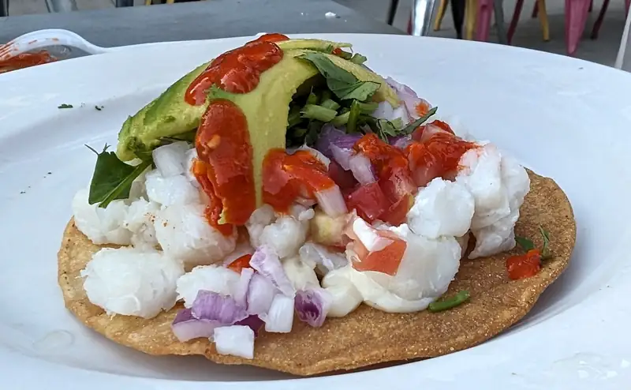
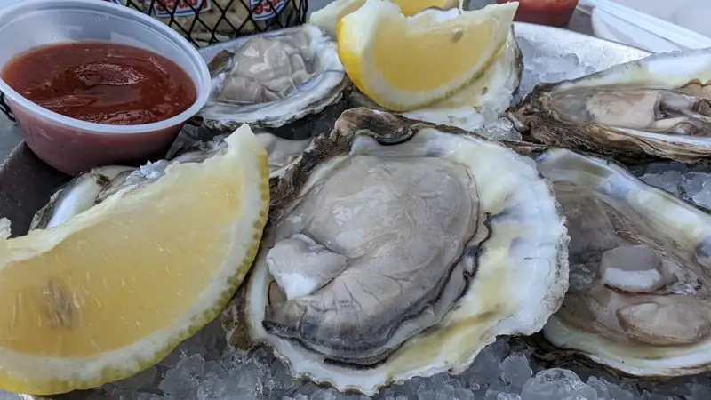
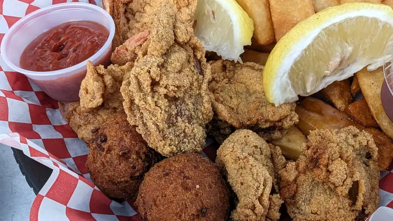
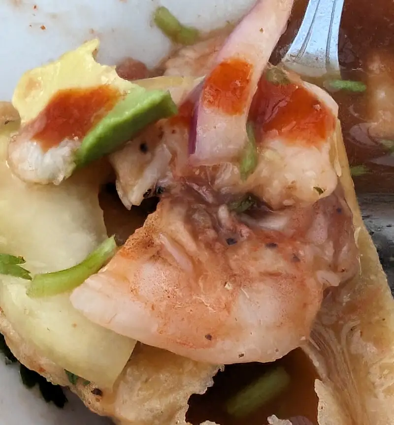

Restaurantes - Fish n Tails
Después de varios meses de antojo, (ver la visita al Rio Bravo).. pues fuimos a la versión local y no al de por allá que tiene su valet parking en fin de semana.... 'gadeeeras para sacarle más dinero a la gente! Bueno, pues, para haber sido sábado, el lugar estaba término medio de lleno cuando llegamos (ya para cuando nos habían servido, había una fila casi hasta afuera para ordenar) y es de esos lugares donde pides en la caja y te lo llevan a la mesa. Y como se anuncian como "oyster bar", pues uno se puede imaginar que tiene ostiones... y, pues sí, pero ni siquiera es como en otros lugares más fufurufos (Boulevardier) donde te dicen de donde vienen los ostiones.. nel.. tienen ostiones frescos, en su concha, fritos, asados y... hm.. no recuerdo de qué otras formas. Sí, el menú es un poco confuso si es la primera vez que vas... y para nuestra sorpresa, además e los ya esperados platillos "sureños" de mariscos empanizados y fritos o cocidos, también tienen ceviche (más de eso abajo) y hasta aguachile. Además, tiene bara completa y es como part de la ambientación del lugar, que vayas, te eches unos tragos y los acompañes de unos mariscos, es decir, es bastante informal y un tanto bar-esco.
Ok pues, primero, la tostada de ceviche... hmm.. si no fueramos de costa, de donde se hace buen ceviche y que además somos exigentes con la comida... TAL VEZ estaría pasable, pero pues... sí, ok, pasable es buena forma de describirlo. Con trozos de los que es muy aparente que es tilapia que muy probablemente pusieron a cocer en agua porque pues.. FDA...
 {kind=link}
Pero a lo que vinimos.. sí esos si les salen bien, y no solamente eso, sino que aquí si los desprendieron de la concha para servirlos; digo, omo debe ser, pero algunos lugares te los dan muy apenas abiertos y sin importar el tamaño y calidad de las conchas.
 {kind=link}
Y no se puede negar que sería difícil que te quede mal empanizar y freir algo.. pero pues sí, podría quedar aguado y grasoso y no, nada de eso con esta canasta po-ca-ma-dre que pedimos de camarones y ostiones 6 de cada uno y papas...
 {kind=link}
Por último, pedimos un aguachile.. sí.. bueno, un poco esperanzados de que eso si les quedara bueno y... nel.. era de camarón (bueno) y pescado (malo: tilapia) y la salsa, pues.. no picaba, no sabía limón y le faltaba sal ... era un intento de aguachile que se quedó lejos, muy lejos de lo que debe saber un aguachile.
 {kind=link}
Pero bueno.. ya no nos contarán de que sus platillos mexicanos estén buenos... luisiana-stylin'.. lessgooo!!!! eso si está bueno, no digo que no deberían tener esas cosas en el menú, porque para los que no saben, el p ceviche cocido y medio remojado con limón les sabe ri-quí-si-mo!